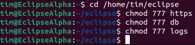
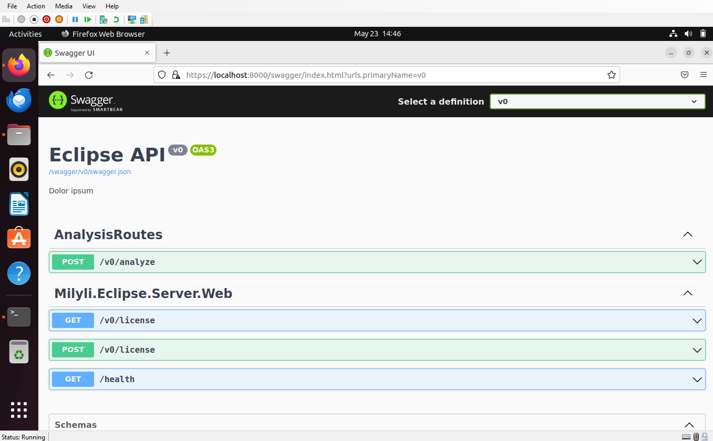

Hosting Eclipse w/ Docker Engine on Ubuntu
Requirements
The following user guide was built using the Ubuntu Noble 24.04 (LTS, 64-bit) running via Hyper-V on a Windows 11 desktop computer on Milyli’s private network.
Nearly all steps followed in this guide can be followed regardless of the host machine of the Linux distribution including a Linux server running Ubuntu, a Windows Server with an Ubuntu VM, or a VM hosted on a cloud service such as Azure or AWS.
Native cloud service hosting is supported but not covered via this document.
This guide will install and use Docker Engine via Docker’s apt repository rather than use Docker Desktop for Linux. If you are using an existing server, you should ensure that old docker files are removed. For more details refer to the Docker removal instructions.
Note: For more general information about Docker and its related components, please refer to the official documentation.
Supported Ubuntu Versions (64-bit)
- Ubuntu Noble 24.04 (LTS)
- Ubuntu Mantic 23.10 (EOL: July 12, 2024)
- Ubuntu Jammy 22.04 (LTS)
- Ubuntu Focal 20.04 (LTS)
VM Setup and Docker Engine Installation
Installing Ubuntu VM
Your approach to hosting Linux should not impact the following steps if a supported 64-bit Ubuntu distribution is used. This guide utilizes Ubuntu 22.04 LTS installed on a networked computer with Hyper-V Quick Create.
Launch the Hyper-V Quick Create tool and select Ubuntu 22.04 LTS.

Configuring the VM and Connecting
Follow the prompts and leave all settings as default to begin with. On the Virtual Machine Created Succesfully screen, select Edit Settings...

In a later step, we will push the docker container image into this VM. Now is the best time to expand the number of resources on the VM to better accommodate Eclipse. For this guide, we made the following adjustments.
- Increase the memory on the virutal machine from
4096to8192. - Change the dynamic memory range from
512to1048576to2048to8192or pick a static memory range. - Edit the hard drive and choose to expand it from
12 GBto36 GBor a greater number.
If your organization has additional requirements for the VM, make those changes now. Once complete, connect to and log into the VM.
You will be required to create a user account as a part of the operating system's first startup. This account will have access to perform root commands. This guide will utilize this user for all following steps.
Expand the Hard Disk
Hyper-V partitions the hard drive at the initial 12 GB automatically as a part of the quick-create process.
Ubuntu hosted on Hyper-V may have issues when trying to use lvdisplay,lvextend, or GParted. For this guide, Cloud Guest Utils` was used.
- Open the terminal.
-
Run the command
sudo fdisk -land note the name of the primary Linnux filesystem (if following along, it should be/dev/sda1). -
Install Cloud Guest Utils using the command
sudo apt install cloud-guest utils - Grow the partition using the command
sudo growpart /dev/sda 1 - Resize the partition using the command
sudo resize2fs /dev/sda1

Install Docker Engine From Repository
To install Docker Engine the full, detailed instructions should be followed. These are available on the official docker guide.
Follow the guide up until the step for running the hello-world docker container.

Create a Developer Certificate
The Eclipse container requires an HTTPS certificate PFX in order to start and run. For Alpha and Beta purposes, an self-signed developer certificate can be used. If possible, a proper certificate from a validate certificate authority should be used to generate the PFX.
A developer certificate can easily be created using Windows PowerShell and the following commands.
- Define a certificate variable using the
New-SelfSignedCertificatecommand. - Create (and retained) a password for the cert.
- Export the PFX for the newly created Self Signed Certificate.
$NewCert = New-SelfSignedCertificate -Type SSLServerAuthentication -DnsName localhost -CertStoreLocation Cert:\CurrentUser\My
$Pwd = ConvertTo-SecureString -String "eclipse" -Force -AsPlainText
Export-PfxCertificate -Cert $NewCert -FilePath "C:\eclipse\eclipse.pfx" -Password $Pwd

Load Eclipse Container Image
Create Volume Folders
If you have organization specific processes for creating folders, please follow those at this point.
- In the
Homefolder create a new folder namedeclipse. - Inside the
eclipsefolder, create three additional folders namedlogs,https, anddb. - Update the volume folder permissions to 777 with the
chmodcommand.

Store Container Image and Cert on VM
If the VM is connected to the internet, download the container image file Milyli shared with you to the eclipse folder.
The PFX created in the previous step should be placed in the eclipse\https directory.
If the files are on a host machine and you do not already have tools for pushing files into your virtual machine, SSH is a powerful and secure way of doing so. Using the SCP PowerShell command from the host machine enables easy transfer to VM.
If you are unsure of the IP address of your virtual machine, use the following command and note the Get-NetNeighbor command Get-NetNeighbor -LinkLayerAddress 00-15-5d-* and take note of it for later steps.
The easiest way to make SSH requests to the VM is by installing openssh server with the terminal command sudo apt install openssh-server.
For the example file transfers below, the image and PFX file have been saved on the VM host machine inn the c:\eclipse directory.
- Launch PowerShell/Windows Terminal.
- Change the directory to
c:\eclipse. -
From the host machine, run the SCP command
scp eclipse.pfx [username]@[ipaddress]:/home/[username]/eclipse/https.
-
From the host machine, run the SCP command
scp eclipse.server.alpha-6 [username]@[ipaddress]:/home/[username]/eclipse.
Load Container Image
Finally, load the image into Docker Engine with the docker load command.
sudo docker load -i eclipse.server.alpha-6

Running Eclipse Container
With the container loaded, we're ready to get it running. Replace the values of the parameters in the following command with the ones that match the work you've done in previous steps.
sudo docker run -dt -e "ASPNETCORE_URLS=https://+:443" -e "ASPNETCORE_Kestrel__Certificates__Default__Password=[YOURPASSWORD]" -e "ASPNETCORE_Kestrel__Certificates__Default__Path=/https/[YOURCERTIFICATENAME].pfx" -e "ASPNETCORE_HTTPS_PORT=443" -p 8000:443 --name Milyli.Eclipse.Server.Web -v /[PATHTOHTTPSFOLDER]/https:/https:ro -v /[PATHTODBFOLDER]/db:/db:rw -v /[PATHTOLOGSFOLDER]/logs:/logs:rw milyli.eclipse.server
Below is an example with the values from this guide.
sudo docker run -dt -e "ASPNETCORE_URLS=https://+:443" -e "ASPNETCORE_Kestrel__Certificates__Default__Password=eclipse" -e "ASPNETCORE_Kestrel__Certificates__Default__Path=/https/eclipse.pfx" -e "ASPNETCORE_HTTPS_PORT=443" -p 8000:443 --name Milyli.Eclipse.Server.Web -v /home/tim/eclipse/https:/https:ro -v /home/tim/eclipse/db:/db:rw -v /home/tim/eclipse/logs:/logs:rw milyli.eclipse.server

If following along, Eclipse should now be running on your VM!
Navigate to https://localhost:8000/swagger/index.html on the VM to verify it's running successfully!

At this point, if you followed this guide exactly as written, Eclipse should also be accessible via the host machine using the IP address: https://[IPADDRESS]:8000/swagger/index.html. Additional steps will be required of your organization's network administrator to ensure the Eclipse server visible to your Relativity instance.
In order for the Eclipse Relativity Application to access the server, the agent(s) servers where the Eclipse Agent will be created must have access to the base URL of the Eclipse server.
Useful Commands
Get container Id
sudo docker ps -a
View container logs
sudo docker logs container_id
Stop a running container
sudo docker container stop container_id
Running Docker Engine Rootless
If needed, both Docker Engine and Eclipse can be ran rootless. Milyli provides limited technical support for this configuration beyond confirming that it is valid. We strongly suggest reading and following the official Docker documentation for doing so.